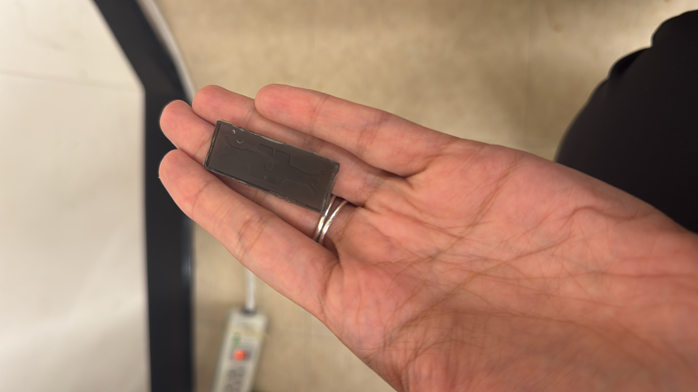
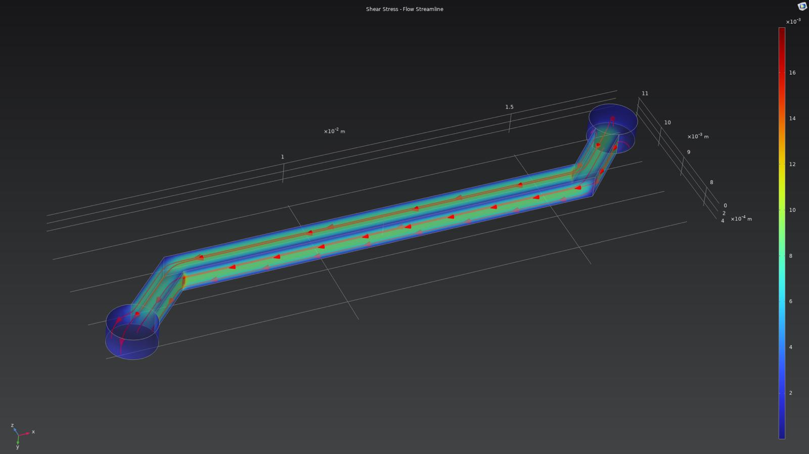
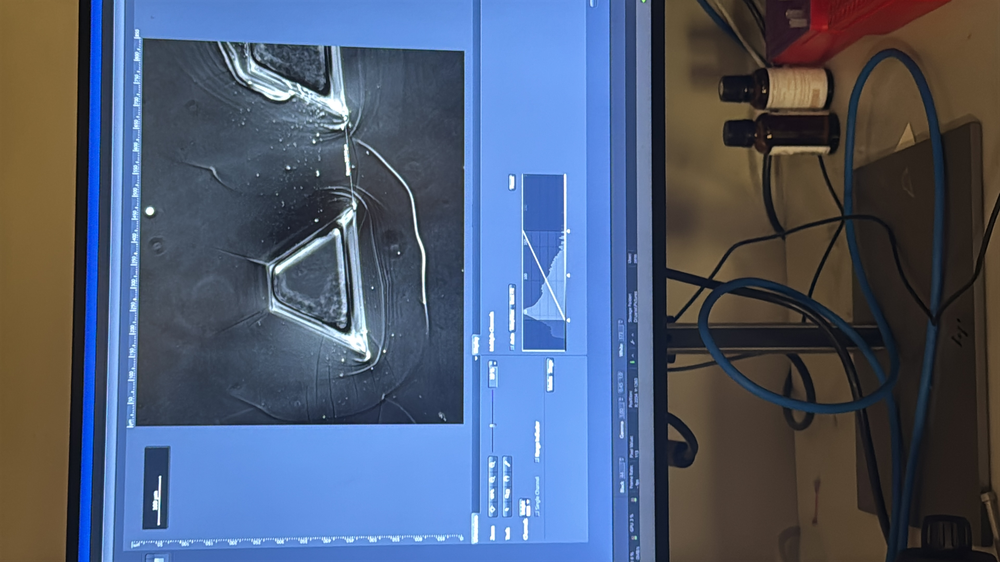

Builds
Awards & Fellowships
Publications
PalpAid: Breast Cancer Diagnostic
A quantitative, low-cost handheld breast palpation device designed for at-home use and primary care settings. Clinical breast examination is subjective — two clinicians feeling the same lump will disagree on size, hardness, and location. There's no quantitative, affordable tool that a woman can use at home to track breast tissue changes over time.
I engineered PalpAid — a handheld palpation device prototype incorporating optimized optical components and shape-from-shading algorithms for quantitative breast tumor detection. The device interfaces directly with a smartphone app featuring palpation visualization, lump location mapping, and lesion tracking.
I led SBIR Phase-I and BRCP grant proposals and conducted 40+ stakeholder interviews through the NSF I-Corps program. I also developed mechanical breast tissue analogs using poly(vinyl alcohol) with chaotropic salt inclusions for device testing.
Organ on a Chip Models
A multi-cellular microfluidic platform that models cancer metastasis across the blood-brain barrier in real-time. Brain metastasis is the leading cause of death in patients with advanced cancers — yet we have no reliable way to model how cancer cells breach the blood-brain barrier outside of animal experiments.
I developed a multi-cellular BBB-on-chip model incorporating endothelial cells, pericytes, astrocytes, and neurons — the four critical cell types that form the neurovascular unit. The chip features serpentine microfluidic channels with controlled shear stress mimicking physiological blood flow conditions.
The platform enables real-time visualization of cancer cell extravasation across the blood-brain barrier under a confocal microscope. This platform enables therapeutic screening — testing whether new drugs can prevent cancer cells from crossing the BBB, all in a device smaller than a credit card. Presented at the ASCB Conference 2024.



Tissue Engineered Blood Vessels
At Harvard University's Zhang Lab, I developed implantable tissue-engineered blood vessels using two-phase bioprinting materials. The goal: create synthetic vascular grafts that can replace damaged arteries and integrate seamlessly with living tissue.
I built the computational backbone — CFD models simulating bidirectional flow dynamics through micropatterned surfaces, optimizing channel geometries to promote endothelial cell alignment and reduce thrombogenicity. Then I wrote automated image processing algorithms to characterize cellular responses in vessel-on-chip platforms.
My CFD paper on micropatterned surface optimization was published in Bioengineering (2024, 11, 1092) and nominated for the Editor's Choice Award.
BioDot: Handheld CBC Device
A point-of-care complete blood count device using microfluidics and dielectrophoretic separation — for underserved healthcare settings. A standard CBC machine costs $50,000+, fills a room, and needs a trained technician. BioDot fits in your hand.
The device measures 160mm × 100mm × 50mm. A finger-prick blood sample flows through microfluidic channels where dielectrophoretic forces separate white blood cells, red blood cells, and platelets. Results in 2-4 minutes with 90-100% accuracy. Designed for community health workers in underserved settings — no lab, no technician, no refrigeration.

Medical Devices & Senior Design
ASD Self-Harm Prevention Sleeve
Protective sleeves for patients with Autism Spectrum Disorder to prevent self-injurious behavior. The device features dual Kevlar layers for impact resistance, a neoprene/silicone middle layer for pressure distribution, and a cotton/spandex inner layer for comfort. I performed full FDA Design Controls (21 CFR 820.30), FMEA, and V&V planning.


Heardio: Smart Pill Dispenser
A medical pill dispensing system with a smart bottle and mobile app for medication adherence. Features a "one-dose" dispensing mechanism that physically prevents double-dosing, auto-lock functionality, and a fingerprint sensor to ensure only the patient can access their medication.


CPR Assist Device
An assistive device for CPR training and real-world application that ensures proper compression depth and rate while reducing hand and wrist discomfort during administration. Designed for both training environments and emergency responders.

Drug Discovery & Scaffold Engineering
DDX3 Inhibitor — Johns Hopkins University
Investigated the therapeutic efficacy of RK-33, a novel DDX3 pathway inhibitor, for breast and colon cancer treatment. DDX3 is overexpressed in aggressive cancers and drives tumor progression through Wnt signaling. I performed cell viability assays, protein expression profiling via Bradford Assay, Western blots, and single-cell RNA sequencing analysis.

Bone Regeneration Scaffolds
Built polysaccharide hydrogel beaded scaffolds for bone regeneration. The non-toxic scaffolds were implanted in mice skull models for drug delivery testing. I performed decalcification and storage of mice skulls, created wax blocks using a HistoEmbedder, and sectioned tissue for histological analysis.


Software Tools Suite
Lab tools shouldn't require a $1,000 software license or a 20-step ImageJ macro. I build free, open-source, browser-based analysis tools that run entirely in the client — no server, no installation, no login. When a browser can't do the job, I convert legacy ImageJ plugins into standalone Python applications with Tkinter GUIs and PyInstaller packaging.
The Tools
Angiogenesis Analyzer — Python · Desktop
Standalone Python conversion of Gilles Carpentier's ImageJ Angiogenesis Analyzer. Full morphology-based quantification: segmentation, loop removal, junction clustering, skeleton tracing. Tkinter GUI with PyInstaller packaging.
Transwell Invasion Analyzer — Web · JavaScript
Browser-based tool for quantifying cell invasion in transwell assays. Rolling-ball background subtraction, pore thresholding, and size-based filtering. Deployed live on GitHub Pages.
Western Blot Quantification — Web · JavaScript
Client-side Western blot band quantification tool. Automatic lane detection, background correction, and normalized intensity measurements — entirely in the browser.
Chromatin NMF Analysis — Python · Bioinformatics
Non-Negative Matrix Factorization pipeline for analyzing twelve histone modifications at forty genomic loci in S. cerevisiae. Identifies site-specific chromatin signatures in DNA damage response.